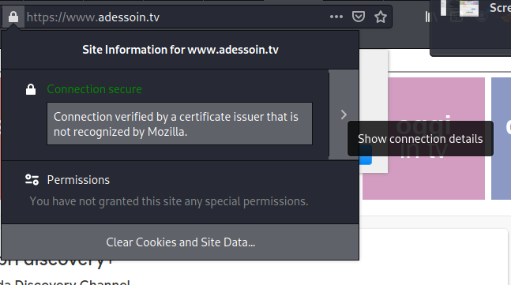
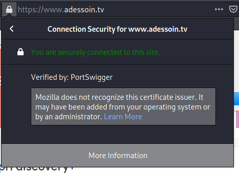
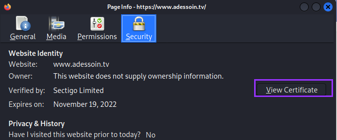

Vhosts and SSL Certs
VHosts
Add the ip to /etc/hosts with a domani dame of your choice in case there are Vhosts
Port 53 openIf There is open port 53 try a DNS Zone Transfer
dig axfr @10.10.10.5 hack.me
SSL Certs
nmap --script=ssl-cert.nse 10.50.96.5,15 10.50.97.5,6,15
Trovato un FQDN name(commonName) nel certificato SSL cert quindi
aggiungo l'inirizzo ip della macchina a /etc/hosts → “192.168.3.138 subdomain.domain.it"”
sudo sh -c 'echo "SERVER_IP subdomain.domain.it" >> /etc/hosts'
1. lock icon >
Show Connection Details.
2. More Information > View Certificate > Details.
  search for emails or domain connected to the ip